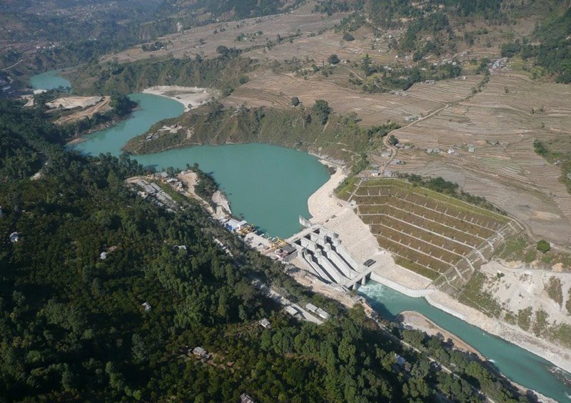
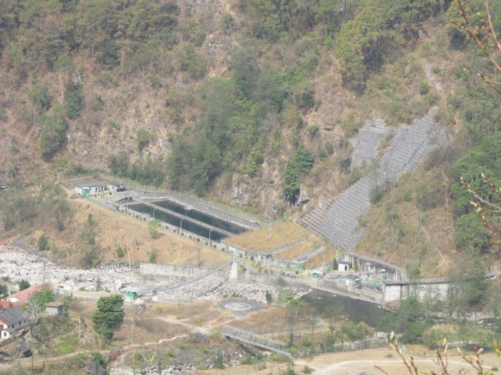

結論 ネパールの水力は、インドへの輸出という需要の出口が2024年の政府間合意で制度化された。ただし1件の発電所は数十億円から数百億円の事業費を要し、4,000万円で入れるのは開発段階の少数持分と調査業務に限られる。10年目の売上は楽観で120億円、保守で15億円である。日本国内に該当する市場はなく、基準2は満たさない。
ネパールの流れ込み式水力発電所に、開発段階から少数持分で出資し、運転開始後は保守と資産管理を受託する。売電先はネパール電力公社であり、余剰の電力は同公社を通じてインドとバングラデシュに輸出される。日本の電力会社・商社・年金基金に共同出資を提案し、国際開発金融機関の融資と組み合わせて案件を組成する。
| 指標 | 数値 | 時点・出典 |
|---|---|---|
| 理論上の包蔵水力 | 約83,000MW | 1966年の推計1 |
| 経済的に開発可能な包蔵水力 | 約42,000MW | 同上。大型貯水式を除くと約20,000MWとする見解もある1 |
| 輸出電力量 | 3,877.4GWh | 2025/26年度。前年度比62.89%増2 |
| 輸出収入 | 293.2億ルピー | 2025/26年度。前年度は174.5億ルピー2 |
| 輸出の平均単価 | 7.56ルピー/kWh | 2025/26年度2 |
| インドからの輸入 | 1,149.8GWh・105.5億ルピー | 2025/26年度。前年度比31.57%減2 |
| インドとの送電線の輸出容量 | 1,850MW | 2026年7月の報道3 |
1ネパール・ルピーは1インド・ルピーの1/1.6に固定されている。本ページでは1ネパール・ルピー≒1円で換算する。輸出収入293.2億ルピーは約290億円である。
推計 10年間の発電所の事業費 ＝ 輸出合意の上限 10,000MW × 1MW当たり事業費 2.5〜3.0億円 ＝ 2.5〜3.0兆円
1MW当たりの事業費は、216MWのアッパー・トリスリ1の総事業費6.47億ドル6を1ドル150円で換算した約4.5億円/MWを上限の参考とし、小規模案件はこれより低いと仮定した。10,000MWの全量が建設される前提であり、上限である。
推計 年間の売電収入 ＝ 発電容量 × 設備利用率 55% × 8,760時間 × 単価 6.5ルピー/kWh。10,000MWを加えた場合は 10,000MW × 0.55 × 8,760時間 ＝ 48,180GWh となる。これに6.5ルピーを乗じると約3,130億ルピー、約3,100億円である。
市場の桁は、建設投資で兆、売電収入で千億である。いずれもネパールとインドの市場であり、日本国内の市場ではない。

| 年月 | 変化 | 数値 |
|---|---|---|
| 2021年9月 | 外国直接投資で最大の水力案件の本体工事が始まった | アッパー・トリスリ1 216MW、年間発電量1,533GWh5 |
| 2021年10月 | インドがネパールからの電力輸入を初めて承認した | 39MW2 |
| 2024年1月4日 | ネパールとインドが長期の電力取引の覚書に署名した | 期間25年。最初の10年で10,000MWの輸出を目標とする4 |
| 2024年8月 | インドが輸出の追加承認を出した | 28案件から941MW7 |
| 2025/26年度 | 輸出収入が過去最高になった | 293.2億ルピー、前年度比67.96%増2 |
| 2026年12月 | アッパー・トリスリ1の完工予定 | 着工から5年強5 |
2021年以前のネパールは電力の純輸入国であった。2025/26年度の越境取引の純収入は187.6億ルピーであり、前年度の45.3億ルピーの約4.1倍である2。輸出の制度と送電線が揃ったため、発電所の建設が売電先の不足で止まる可能性は下がった。

| 種類 | 事業者 | 動き |
|---|---|---|
| 外資の発電事業者 | 韓国南東発電、大林産業、啓龍建設 | アッパー・トリスリ1の出資者。国際金融公社も出資する6 |
| 国際開発金融機関 | 国際金融公社・アジア開発銀行・アジアインフラ投資銀行・韓国輸出入銀行など9機関 | アッパー・トリスリ1に約4.53億ドルの融資団を組成した6 |
| インドの公営電力会社 | インドの公営水力会社 | ネパール国内で大型案件を開発している。本ページでは個別案件の進捗を確認できなかった |
| ネパールの民間発電事業者 | 現地の独立系発電事業者 | 数MWから数十MWの案件の大半を占める。1者当たりの規模は小さい |
首位の条件 ネパールの発電容量で首位になるには、数千億円の自己資本が必要であり、10年では届かない。首位を狙えるのは、日本の資金をネパールの水力に仲介する経路である。押さえる条件は3つある。①インドの輸入承認を得られる案件だけを選び、承認の手続を自社で処理できること。②国際開発金融機関の環境社会基準を満たす案件を組成できること。アッパー・トリスリ1は地域住民の同意の手続で工事が中断した5。③日本の出資者に、ルピー建ての収入と為替の変動を説明できる資料と実績を持つこと。
1年目は発電所に出資しない。調査業務の受託と、開発段階の案件の選別に資金を使う。
| 用途 | 金額 | 検証すること |
|---|---|---|
| 人件費 創業者と水力技術者1名 | 1,500万円 | 現地技術者を確保できるか |
| 現地法人の設立と外国投資の承認申請 | 400万円 | 承認までの期間 |
| 候補案件30件の机上調査と5件の現地調査 | 800万円 | インドの輸入承認を得られる見込みがある案件の割合 |
| 開発段階の小規模案件への少数出資の予約金 | 800万円 | 出資比率と開発権の価格 |
| 予備 | 500万円 | 為替の変動と手続の遅延に充てる |
| 合計 | 4,000万円 |
| 月 | 計画 |
|---|---|
| 1〜3月目 | 運転中・建設中・開発中の案件を一覧化する。輸出承認の対象になった28案件7の出資者と規模を確認する |
| 4〜6月目 | 日本の電力会社、商社、インフラ投資家に共同出資の意向を確認する。5社から関心表明を得ることを目標とする |
| 7〜9月目 | 10MW前後の開発段階の案件を2件選び、事業性評価を受託する。評価費用は共同出資の候補が負担する |
| 10〜12月目 | 1件について少数持分の取得契約を結ぶ。融資は現地銀行と国際開発金融機関の両方に打診する |
1年目の判定基準は、日本の共同出資者1社以上が出資を決めることである。出資者を得られない場合は自己資本の調達経路がなく、型Bは成立しない。
| 段階 | 資金 | 金融機関 | 条件 |
|---|---|---|---|
| 1〜2年目 調査と開発 | 自己資金、創業融資 | 日本政策金融公庫 | 海外の発電所への出資は担保にならない。調査業務の受託収入で運転資金を補う |
| 3〜5年目 10MW級の建設 | ルピー建てのプロジェクトファイナンス | ネパールの商業銀行の協調融資 | 総事業費の約70%を借入、約30%を自己資本とする。アッパー・トリスリ1の比率に合わせた仮定6 |
| 5年目以降 50MW級以上 | ドル建ての長期融資 | 国際金融公社・アジア開発銀行・国際協力銀行、日本貿易保険の付保 | 環境社会基準の充足が条件。為替のリスクは出資者が負う |
| 運転開始後 | 持分の一部売却 | 日本と海外のインフラ投資家 | 売却益を次の案件の自己資本にする |
型Bの前提は、発電所の資産と売電契約を担保に借りることである。ただし自己資本30%を自社だけで用意できないため、日本の共同出資者を確保できるかが成長の上限を決める。
| 年目 | 1 | 2 | 3 | 5 | 7 | 10 |
|---|---|---|---|---|---|---|
| 連結する運転中の容量 MW | 0 | 0 | 0 | 50 | 150 | 400 |
| 売上 億円 | 0.3 | 0.8 | 1.5 | 15 | 45 | 120 |
| 営業利益 億円 | -0.5 | -0.4 | -0.3 | 5 | 17 | 48 |
| 累計投資 億円 | 0.4 | 2 | 25 | 130 | 380 | 1,000 |
| 借入残高 億円 | 0 | 1 | 17 | 90 | 260 | 680 |
| 年目 | 1 | 2 | 3 | 5 | 7 | 10 |
|---|---|---|---|---|---|---|
| 連結する運転中の容量 MW | 0 | 0 | 0 | 10 | 10 | 50 |
| 売上 億円 | 0.2 | 0.4 | 0.5 | 3 | 3.5 | 15 |
| 営業利益 億円 | -0.6 | -0.5 | -0.5 | 0.5 | 0.8 | 4 |
| 累計投資 億円 | 0.4 | 1 | 3 | 30 | 32 | 150 |
| 借入残高 億円 | 0 | 0.5 | 2 | 21 | 19 | 100 |
前提
楽観の10年目でも売上は120億円で、目安の1,000億円の12%である。1,000億円に届くには約3,300MWを連結する必要があり、これは輸出合意10,000MWの約3分の1にあたる。
本案の売上はすべてネパールとインドの市場で生じる。日本国内に、海外の水力発電への出資と運営という1,000億円以上の市場は確認できない。基準2の意味での日本一には該当しない。
到達しうる位置は、ネパールの水力に出資する日本の事業者の中での首位である。現時点で外資最大の案件は韓国の企業連合が保有する6。日本の事業者が同程度の案件を保有した例は、本ページでは確認できなかった。
停止する位置は2つある。1つ目は1年目で、日本の共同出資者を得られない場合である。自己資本が不足し、10MW級の建設に進めない。2つ目は5年目前後で、インドの輸入承認が案件単位で遅れる場合である。輸出できない電力はネパール国内の需要に限られ、乾季には国内でも不足する。
| 順 | 国 | 理由 |
|---|---|---|
| 1 | ネパール | 輸出の合意と送電線が整った。外資の先例と国際開発金融の融資の型がある4 6 |
| 2 | ブータン | インドへの電力輸出を国の収入源とする同じ構造をもつ。本ページでは制度を確認していない |
| 3 | ラオス | タイなど近隣国への電力輸出を行う。日本の電力会社の出資例がある。本ページでは個別案件を確認していない |
3か国はいずれも、国内需要より大きい水力を開発し、隣の大国に売る構造をもつ。越境の電力網の一部を保有する事業であり、グローバルなインフラになりうる。ただし1案件の規模が大きく、自己資本の制約で展開の速度は限られる。
| # | 基準 | 判定 | 根拠 |
|---|---|---|---|
| 1 | 50年、魂を燃やし続けられるか | 創業者が判定 | |
| 2 | 10年以内に、国内市場規模1,000億円以上の市場でシェア1位になれるか | × | 売上はすべて海外で生じ、日本国内に該当する市場がない |
| 3 | 4,000万円で始められ、融資で伸ばせるか | △ | 調査業務は4,000万円で始められるが、建設には事業費の約30%の自己資本が必要で、共同出資者なしには伸ばせない |
| 4 | グローバルなインフラになり得るか | ○ | ネパールからインドとバングラデシュへの越境電力網の発電側を保有する事業である |
| 5 | 営業力が最初の売上に直接結びつくか | △ | 売電先は政府間の枠組みで決まり営業の余地は小さいが、日本の共同出資者の獲得には法人営業が直接結びつく |
| 6 | 同じビジョンを共有する仲間を誘える事業か | 創業者が判定 | |
| 7 | 本業が早く現金を生み、返済と出資の原資になるか | × | アッパー・トリスリ1は着工から完工まで5年強を要し、運転開始まで現金はほとんど生じない |
| 8 | 投資先を束ねる群の中核になれるか | △ | 施工・保守・送電の会社を束ねられるが、範囲はネパールの水力の周辺に限られる |
| 9 | 成長の資金源がA・B・Cのどれに当たるか | B | 発電所の資産と売電契約を担保にしたプロジェクトファイナンスで建設する |
1. 為替 売電収入はネパール・ルピー建てで、ルピーはインド・ルピーに固定されている。インド・ルピーが円に対して下落すると、円建ての収入と配当は減る。ドル建ての融資を使うと、返済の負担がルピー建てで増える。ヘッジの手段は限られ、潰せない。
2. インドの輸入承認 輸出は案件ごとにインドの承認を要し、2024年8月時点の承認は28案件941MWである7。覚書の目標10,000MWとの差は大きい。対策は承認済みの案件か、承認の要件を満たす案件だけに出資することである。インドの政策変更そのものは潰せない。
3. 工期の遅延と住民の同意 アッパー・トリスリ1は融資の確定が遅れ、住民の2集団の対立で地域支援の活動が2023年初めまで止まった5。対策は国際開発金融機関の基準に沿った同意の手続を開発段階から行うことである。
4. 自然災害 ネパールは地震と洪水の多い山岳国であり、取水設備と導水路が被災すると長期の停止になる。対策は保険の付保と、複数の流域に案件を分けることである。
5. 乾季の発電量の低下 流れ込み式は河川の流量に発電量が依存し、輸出は雨季に集中する。2025/26年度も乾季にはインドから1,149.8GWhを輸入した2。対策は貯水式の案件を組み合わせることだが、貯水式は事業費と環境影響が大きい。
未確認: ネパール全体の設備容量・ネパール電力公社の買取単価・インドの公営水力会社の案件の進捗・ブータンとラオスの制度。